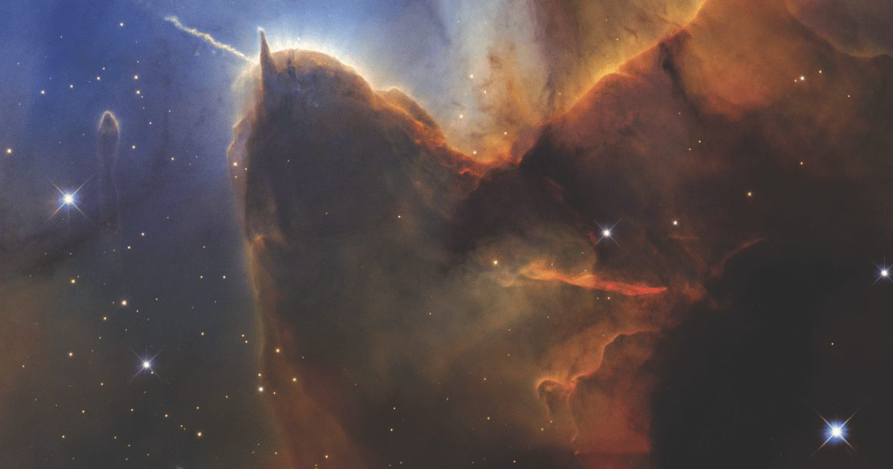

Далекая NGC 3137 раскрывает подсказки о нашей собственной галактике
Блестящие звездные скопления и эмиссионные туманности рубинового цвета покрывают усыпанные звездами спиральные рукава NGC 3137.
Галактика, которая простирается почти на 140 000 световых лет, выплескивается из рамки этого изображения Хаббла.
Туманности - это звездные ясли, светящиеся излучением атомов водорода, возбуждаемых массивными звездами, образующимися внутри.
Голубоватые звездные скопления представляют собой следующий этап.
Продолжение читайте «Далекая NGC 3137 раскрывает подсказки о нашей собственной галактике».